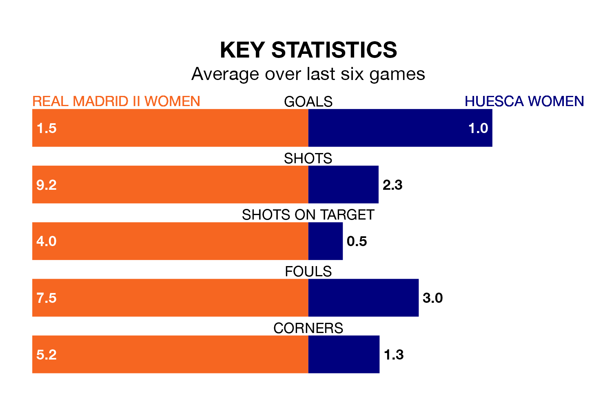

Segunda Federación Femenina's top two sides face each other in Sunday's kick-off, when Real Madrid II Women host zero-placed Huesca Women.
Madrid II Women have picked up 14 wins and three draws from 18 games so far this season, and sit 24 points above the visitors going into the 3pm match.
Huesca, meanwhile, have won six and drawn three, picking up 21 points.
With 29 goals in 18 games so far this season, Madrid II Women are scoring more than average in the league with 1.6 goals per game. And they are conceding fewer than average, letting in nine goals at a rate of 0.5 per game.
Huesca, meanwhile, are below average scorers, with 1.2 goals per game, compared to a league average of 1.3. They have conceded 1.4 goals per game.
The hosts are in fantastic form in Segunda Federación Femenina, with five wins and one loss from their last six games.
With two wins and a draw over that period, the away side's form is much worse – they have taken seven points from 18, compared to Madrid II Women's 15.
Madrid II Women's last match was on January 28, a 2-0 win against Sporting Gijón Women, with getting the goals for Madrid II Women.
Huesca beat Atlético Madrid III Women 2-1 last time out, on January 27, with on the scoresheet.
Updated: 13:20 (UTC), 29/01/24